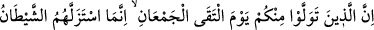
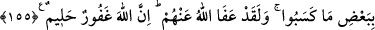

155. (Uhud’da) iki ordu karşılaştığı gün, sizi bırakıp gidenleri, sırf işledikleri bazı
hatalar yüzünden şeytan (yerlerinden) kaydırmıştı. Yine de Allah, onları affetti.
Çünkü Allah, çok bağışlayıcıdır, halîmdir.
Uhud günü hezimete uğrayan müslümanlar ile kâfirlerden ibâret iki ordunun
karşılaştığı gün, içinizden yüz çevirip gidenleri, Hz. Peygamber’in emrine karşı çıkıp
dağdaki mevzilerini terketmek, ganimete ve dünyaya hırs duymak tarzındaki günah ve
mâsiyetler gibi bazı işlerden dolayı Allah’ın desteğinden ve kalp gücünden mahrûm
kaldılar. Şeytan da onları kaydırmak istedi. Bozguna uğramalarının sebebi, şeytanın
onların mağlup olmasını isteyip mağlûbiyete götürecek davranışlara itmesidir.
Ama yine de Allah onları affetti. Çünkü tevbe edip mâzeret beyân ettiler. Şüphesiz
Allah, günahları bağışlayandır, halîmdir. Tevbe edebilsin diye, günahkârı hemen
cezâlandırmaz.
Nitekim Hz. Peygamber buyurur:“Eğer hiç günah işlemeseydiniz, Allah günah
işleyip tevbe ederek mağfiret isteyecek bir kavim getirirdi de onları affederdi.”[131]
Şeytanın vesvesesinin sebebi de; hayır olsun, şer olsun her şeyde Allah Teâlâ’dan
başka hiç kimsenin künhüne varamayacağı; dilediği kişilerden başka hiçbir kimsenin
tam olarak bilemeyeceği Allah’a ait birtakım sırlar olduğunun bilinmesini temindir.
Şeytan, yakîn ehlinden, nûrânî zâtlardan ihlâslı kişileri azdıramaz. İşlediği günahlar
sebebiyle, insanın kalbinde zulmet ve hevâ şâibesi oluşmadığı müddetçe, şeytanın
vesvese vermesi için, açık bir kapı kalmaz. İşte nefsin zulmetlerinden kurtulan sâliklere,
şeytanın vesvese vermesini bir kenara bırakın, yaklaşması bile mümkün değildir.
Hikâye edilir ki: Cüneyd Bağdâdî (rh.a.) rüyâsında şeytanı çırılçıplak görmüş ve:
“İnsanlardan utanmıyor musun?” diye sormuş. Şeytan: “Sen bunlara insan mı diyorsun?
İnsan dediğin; Şûniziyye mescidindekilerdir. Bunlar beni mahvettiler, ciğerimi yaktılar.”
demiş.
Cüneyd der ki: “Uyandığım zaman, erkenden bu mescide gittim. Orada başlarını öne
eğmiş, ellerinin arasına almış bir topluluğun derin bir tefekküre daldıklarını gördüm. Bu
zâtlar beni görünce: “Habîs şeytanın sözü seni aldatmasın. İnsanın kalbi, mârifetullah
nûru ile pür nûr olursa, bu ateşten yaratılmış şeytan, o nûr dolu kalbin yanına bile
yaklaşamaz.” dediler.
Ebû Saîd Harrâz (k.s.) şöyle diyor: “Rüyamda İblis’i gördüm. Bastonumu alıp